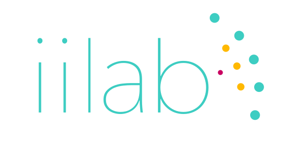

Applied Research in
Core Funding Concept Note
What Core Funding Means to Us
Finding sustainability
Currently, iilab is supported by project-based funding from grants and client work. Between projects, building the organisation is mostly done through volunteer work of our team members.
While fundraising will always be part of our existence, we’d like to explore new funding models to grow our core team and multiply our contributions to the community we are a part of.
What Core Funding Means to Us
Exploring new funding models to scale
Experimenting with new approaches to work is in our DNA and we’re looking for an equally innovative funder to partner with us. Together, we could scale the impact of our governance, human rights and infrastructure programs through open innovation and collaboration, knowledge sharing and network building efforts.
We Are Leaders in Innovation
Across Diverse Communities
iilab has a unique position in the "Public Interest Technology" space.In solution ecosystems, partner organizations gain when one organization evolves its distinct role to complement the other’s contributions. Together, various groups can move toward their goal much more productively than if each group pursued it separately. From Silos To Solution EcoSystems --by William D. Eggers and Paul Macmillan
NGOs / CSOs
Our work with international NGOs and local Civil Society Organisations allow us to have a deep understanding of current problems.
Academia
Our partnerships with academic institutions and researchers allow us to draw from methods that can support evidence based action.
Engineering
Our work with open source, open hardware technical communities and industry allow us to be at the edge of software and hardware innovation.
Funders
We advise funders and governmental organisations and contribute to consolidate existing good practices support ecosystems.
We Are Leaders in Innovation
We Grow Ideas into Ventures
In the lab, we experiment and innovate together with partners and experts.
- Insight, during this phase we work toward understanding the problems that are faced by people and our partners. This process is collaborative and aims at researching and formulating a "ground truth"
- Innovate, during this phase we explore the possible approaches to problems and co-design solutions. We look at how existing technologies might be underutilised or how current research might inform the development of new solutions.
- Pilot, where we test our solutions, deploy them in the field, put them in the hands of new users and evaluate whether they effectively address problems, but are also usable, easy to maintain and sustain.
At the Venture stage, we take solutions that have proven impact and work toward making them scale. At the heart of this transition is the identification of a Champion which will take the lead and carry the initiative forward.
- Incubate, we develop the venture's strategy and operations plan. Evaluate financial sustainability approaches and partnerships,
- Launch, we provide the support to put the plans into motion and make the solution available to the public. We help make sure that the team and infrastructure behind the venture will scale.
- Scale, at this stage the venture is independent and only needs support related to strategic positioning and value within the broader ecosystem.
We Are Leaders in Innovation
With a Culture of Openness
On a day to day basis we embrace innovative, open and distributed modes of collaboration and organisation:
- We work with our clients as partners. We work with clients with which we share a deep appreciation of the issues they're focusing on and the reality of the organisations and funding environment in which they evolve. This creates a relationship that has enabled the development of spin off ventures like the Panic Initiative.
- We adopt open source collaboration practices in all aspect of our work. We push our video editing projects to github, use instant messaging and task management integrations to create transparent and efficient workflows, we reflect on our research projects with an attention to reproducibility and iterative approaches.
- We give value to online presence and collaboration and to offline co-working and spending face to face time.
- We value diversity, gender equality and make efforts to challenge common biases in the tech sector. Our collaborators are … include stats about our human resources
Who Are Having an Impact
Information & Governance
Working with other individuals and teams in many communities, we foster ideas and encourage collaboration. We’ve been able to have some significant impacts through our 3 strategic program areas.
We work on evidence-driven information frameworks helping understand influence or power structures and support decisions based on complex and interconnected information. See ECSA feasibility study, Influence Mapping network, Open Oil Corporate Navigator, DataSphere,...
- Facilitated investigations into the major corporate players in the extractive industries in certain countries, including Nigeria, Tunisia and Mozambique, with the Open Oil Data Framework.
Human Rights & Agency
- We work on protecting and empowering individuals at risk with methods and tools that enhance their capacity to understand, decide and act. See Panic Button, Open Integrity Index, Network Interference Consortium, Secure Hosting Coalition...
Enabling 5000 users to alert their network in case of emergency through the Panic Button mobile application, as part of helping Human Rights defenders in 3 countries adopt risk planning methodologies.
Infrastructure & Community
- We work on informing the design of infrastructure and approaches to collective governance of resources which are grounded in community values. See Engineering Comes Home, Open Droplet, Water Resilience Group, Lake Tanganyika Medical Records & Connectivity ...
Who Are Having an Impact
With Our Track Record
(a note about projects and link to projects page?)
The Next Step is for You.
If you are interested in discussing a potential partnership, we can develop a proposal for core funding that could include some of the following activities:
- continue developing its portfolio of open methods and technologies and strengthen its dissemination and outreach efforts to more actively enable other organisations to learn from it,
- further develop its social and environmental impact through strengthening the venture team focused on scaling up successful ventures,
- continue to contribute perspectives and insights to funders and policy makers feeding into systemic interventions and integrated approaches to problems such as talent shortage, knowledge and effort fragmentation or lack of agility.